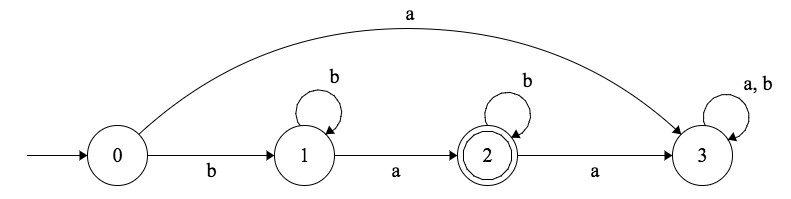
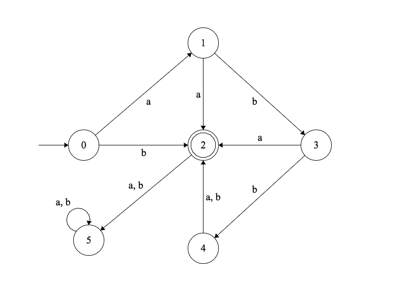
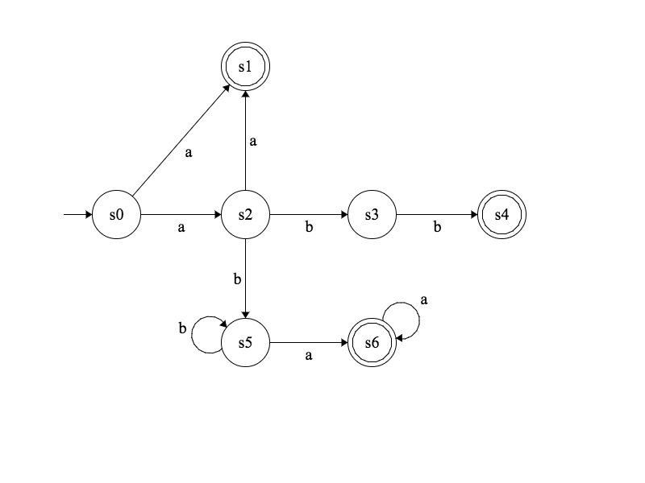

Julien Marcil - julien.marcil@ift.ulaval.ca
Un ensemble $S$ est dénombrable ssi on peut donner une méthode pour énumérer ses éléments de telle sorte que n’importe quel élément soit nommé après un nombre fini d’étapes.
Il existe donc une bijection $ f : \mathbb{N} \to S $.
Soit un ensemble $S$ (fini ou infini).
$$ \left\vert{S}\right\vert < \left\vert{\mathcal P(S)}\right\vert $$
L’ensemble puissance de $A$, noté $\mathcal P(A)$, est l’ensemble de tous les sous-ensembles de $A$.
$$\mathcal P(A) = \{E \mid E \subseteq A\}$$
\[\begin{aligned} \mathcal P(\{0,2,4\}) = \{ &\emptyset,\{0\},\{2\},\{4\}, \\ & \{0,2\},\{2,4\},\{0,4\},\{0,2,4\}\} \end{aligned} \]
Définition: Un langage sur un alphabet $\Sigma$ est un sous-ensemble de l’ensemble $\Sigma^*$.
Considérons les machines $M$ dont les entrées sont un mot d’un alphabet $\Sigma$ et dont la sortie est $0$ ou $1$.
$$ \begin{align} \text{Entrée} \longrightarrow & \boxed{M}& \longrightarrow & \text{Sortie} \\ \Sigma^* \longrightarrow & f : \Sigma^* \to \{0,1\} & \longrightarrow & \{0,1\} \end{align} $$
On peut aussi dire que la machine accepte ou rejette son entrée.
Définition: L’ensemble des mots acceptés par la machine $M$ est le langage de $M$ que l’on notera $L(M)$
$$ L(M) \in \mathcal P(\Sigma^*) $$
Il existe une fonction que votre langage de programmation favori ne peut calculer.
L’ensemble des programmes que l’on peut écrire est dénombrable. Donc, il existe un nombre infini non-dénombrable de fonctions pour lesquelles il n’existe aucun programme capable de les calculer.
Définition: Un automate fini déterministe consiste en un quintuple de la forme $(S, \Sigma, \delta, \iota, F)$ où
Définition: Un langage est dit régulier s’il existe un automate fini déterministe qui le reconnaît.
Une façon de montrer qu’un langage est régulier est de construire un automate qui reconnaît ce langage.
Soit l’automate fini déterministe $M$ suivant. 
Les séquences acceptées ont un ou plusieurs $b$, suivis d’un seul $a$, suivi de zéro ou plusieurs $b$. Donc, $$ L(M) = \{b^mab^n \mid m \in \mathbb N^+, n \in \mathbb N\} $$
Ce langage est donc régulier.
Quel est le langage reconnu par l’automate fini déterministe suivant? 
Soit l ’alphabet $\Sigma = \{b, h, i, o, u\}$. Construire un automate fini déterministe qui accepte le langage $L = \{hibou, hi, bou, hou\}$.
Le complément d’un langage régulier (relativement à $\Sigma^*$) est régulier.
$$ L~\text{régulier} \Rightarrow (\Sigma^* - L)~\text{régulier}$$
Montrez comment on peut transformer un automate fini déterministe $M = (S, \Sigma, \delta, \iota, F)$ pour qu’ il accepte $\Sigma^* - L(M)$.
Puisque $M$ est déterministe, une séquence d’entrée conduit $M$ à un état et un seul.
La transformation à faire est de rendre finaux les états qui ne l’étaient pas et de rendre non finaux ceux qui l’étaient. Donc
$$ L(\,(S, \Sigma, \delta, \iota, S-F)\,) = \Sigma^* - L(M) $$
Les séquences qui étaient auparavant acceptées sont maintenant rejetées et celles qui étaient rejetées sont acceptées.
Soit les languages $A$ et $B$. Nous définissons les opérations suivantes:
L'ensemble des languages réguliers est fermé sur les opérations de Union, Concatenation et Étoile.
Définition: Un diagramme de transitions avec un alphabet $\Sigma$ est dit déterministe si il est complètement défini et non ambigu.
Définition: Un diagramme de transitions avec un alphabet $\Sigma$ est dit complètement défini si, pour chaque symbole $s \in \Sigma$ et chaque état $e$, il y a au moins une transition étiquetée $s$ qui quitte $e$.
Définition: Un diagramme de transitions avec un alphabet $\Sigma$ est dit non ambigu si, pour chaque état et chaque symbole $s \in S$, il existe au plus une transition quittant $e$ et étiquetée $s$.
Nous allons lever deux restrictions que nous avons imposées aux automates déterministes: celle d’être complètement définis et celle d’être non ambigus.

Définition: Un automate fini non déterministe consiste en un quintuple de la forme $(S, \Sigma, \delta, \iota, F)$ où
Dans les notes de cours, $\delta$ est un sous-ensemble de $S \times \Sigma \times S$.
Un élément de $\delta$ est un triplet $(s, a, t) \in S \times \Sigma \times S$ où $t$ est un état accessible à partir de l’état $s$ à la lecture d’un $a$.
Donner l’automate non déterministe $M$ correspondant au diagramme de transition ci-dessous.
Donner le diagramme de transitions de l’automate suivant:
$$(\{A, B, C, D, E, F, G, H, I\}, \{0,1\}, \delta, A, \{G, I\})$$
$$ \begin{align} \delta = \{ & (A,1,B), (A,1,C), (B,0,E), (C,0,B), \\ & (C,0,D), (C,1,F), (D,0,A), (D,0,G), \\ & (D,1,C), (D,1,D), (E,0,H), (E,1,I), \\ & (F,1,G), (F,1,I), (G,0,F), (G,1,G), \\ & (H,0,H), (I,1,H) \ \} \end{align} $$
Définition: L’automate fini non déterministe $M = (S, \Sigma, \delta, \iota, F)$ accepte (ou reconnaît) la séquence $x = x_1x_2x_3\dots x_n$ (où $s_i \in \Sigma$) si et seulement si il existe une séquence d’états $s_0, s_1, s_2, \dots, s_n$ (où $s_i \in S$) tels que $$\iota = s_0$$ et $$\forall_{j=1,\dots,n} \ s_j \in \delta(s_{j-1}, x_j)$$ et $$ s_n \in F $$
Dans le cas contraire, on dit que l’automate rejette la séquence.
Une séquence est acceptée s’il est possible, en partant de l’état initial, d’atteindre un état final en lisant la séquence; même s’il y a, en plus, des chemins qui mènent à des états non finaux, la séquence est acceptée.
C’est la même notion d’acceptation que pour les automates finis déterministes. Sauf que pour un automate non déterministe on peut trouver plusieurs chemins avec la même séquence (à cause de l’ambiguïté).
Pour tout automate fini non déterministe, il existe un automate fini déterministe qui accepte exactement le même langage.
On n’augmente donc pas la puissance des automates finis en permettant le non déterminisme.
Par conséquent, on peut dire qu’un langage est régulier si il est reconnu par un automate fini non déterministe.
Les automates finis non déterministe ont une représentation plus simple.
Définition: Un automate fini non déterministe consiste en un quintuple de la forme $(S, \Sigma, \delta, \iota, F)$ où
où $\Sigma_\lambda = \Sigma \cup \{\lambda\}$